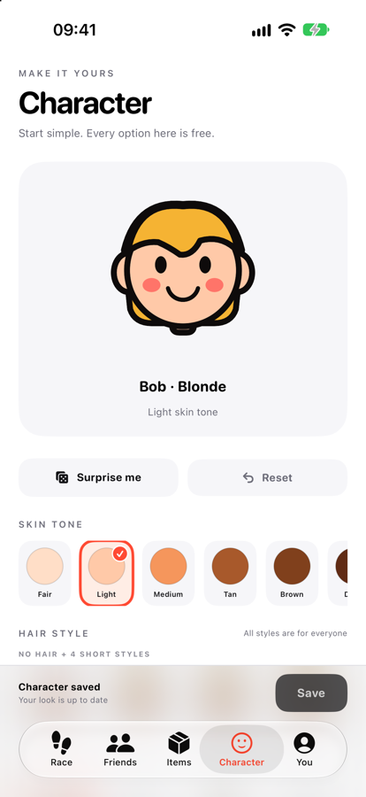

Carrera semanal
Sube posiciones mientras tú y tus amigos camináis.
 WalkBop
WalkBopMovimiento y amigos
Tus pasos de Apple Health se transforman en puntos para una carrera semanal con objetos, remontadas y rivalidad amistosa.
Próximamente para iPhoneDiseñada para iPhone · Por Kestora Labs


Hecha para una función clara
Sube posiciones mientras tú y tus amigos camináis.
Consigue movimientos para atacar, protegerte o remontar.
Compite con las personas que conoces.
En tu día a día
Sube posiciones mientras tú y tus amigos camináis. Consigue movimientos para atacar, protegerte o remontar.

WalkBop es un juego recreativo de actividad física, no un dispositivo médico ni consejo médico.
Estamos preparando la primera versión pública.